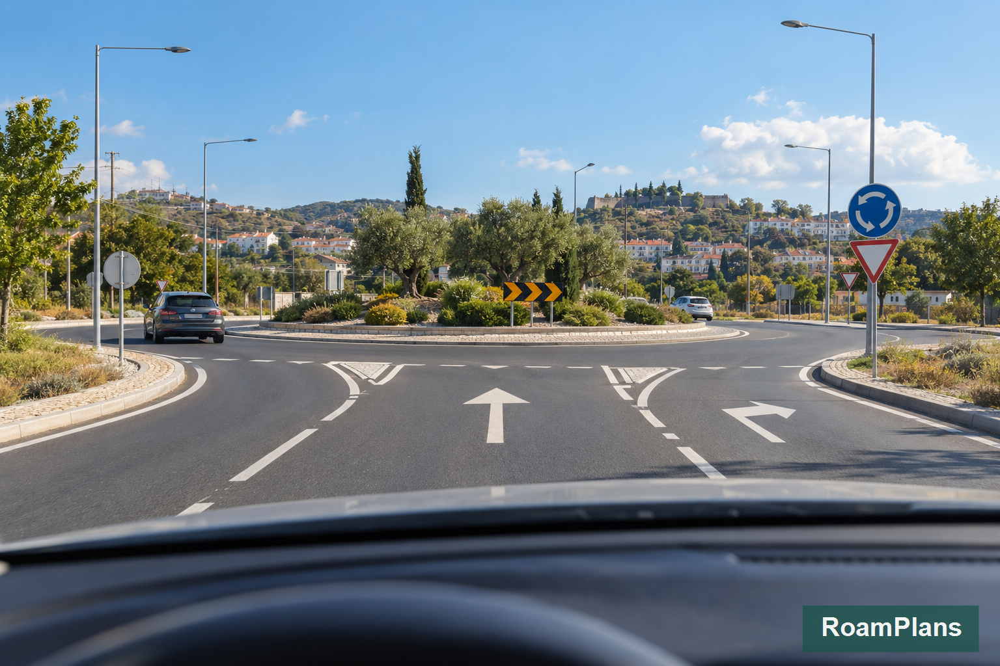
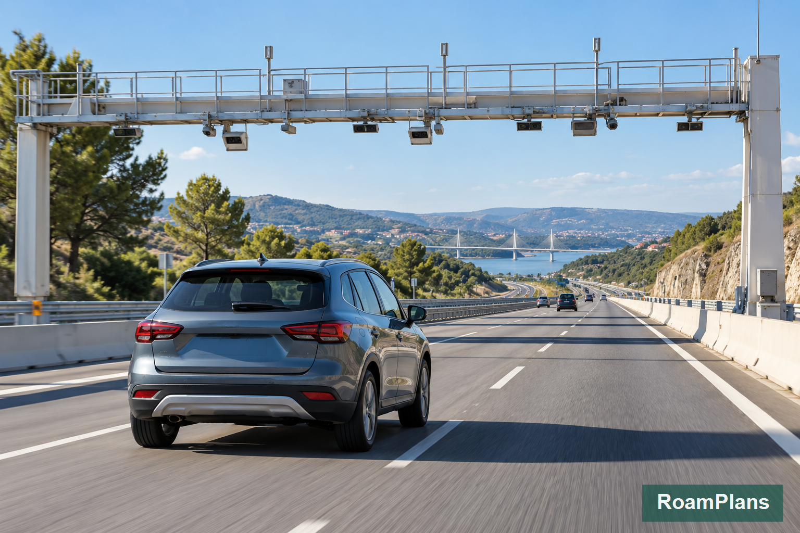
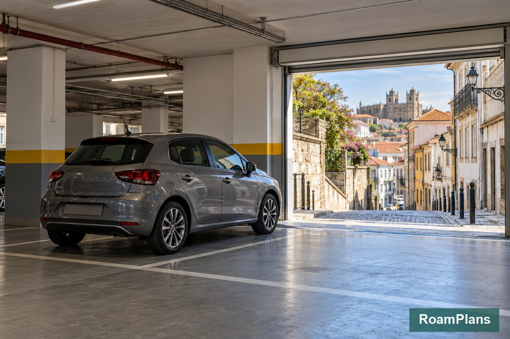

Driving in Portugal: Road Rules, Tolls, Parking and Safety
Driving in Portugal can be useful once your trip moves beyond the main rail routes. A car gives you much more freedom for Algarve beaches, rural Alentejo, small villages, countryside hotels, and scenic regional drives. The difficulty for a first-time visitor is usually not the road network itself. It is adapting to kilometers, roundabouts, motorway tolls, parking signs, and driving rules that may differ from those in the United States.
When I prepare a Portugal driving plan for RoamPlans, I separate road rules from route planning. If a traveler has already decided that a car solves part of the trip, the next job is making that driving section safe and predictable. This guide covers what you need once you are behind the wheel: speed limits, right-of-way, roundabouts, alcohol rules, phones, child restraints, motorways, tolls, parking, and road safety.
Portugal Driving Rules at a Glance
| Rule | What First-Time Drivers Should Know |
|---|---|
| Driving side | Drive on the right |
| Overtaking | Normally pass on the left |
| Built-up speed limit | 50 km/h unless signed otherwise |
| Normal roads | 90 km/h unless signed otherwise |
| Roads restricted to motor vehicles | 100 km/h unless signed otherwise |
| Motorways | 120 km/h unless signed otherwise |
| Standard alcohol limit | 0.5 g/L blood alcohol |
| Probationary drivers | Lower 0.2 g/L limit |
| Seat belts | Required for occupants |
| Handheld phone | Not allowed while driving |
| Roundabouts | Traffic already inside has priority |
| Motorway tolls | Conventional and electronic systems exist |
| Emergency equipment | Warning triangle and reflective vest should be in the vehicle |
Posted road signs can set a different limit or instruction from the general rule.
Follow the sign you actually see on the road.
Is Driving in Portugal Difficult for Americans?
For an experienced driver, Portugal is manageable.
The biggest adjustments for many U.S. visitors are:
- ✓Speed shown in kilometers per hour
- ✓Smaller roads in historic areas
- ✓More roundabouts
- ✓Manual rental cars
- ✓Motorway toll systems
- ✓Tight parking
- ✓Narrow village streets
- ✓Different right-of-way habits
Motorways are generally easier than driving through an old city center.
You may feel comfortable on a motorway within minutes but find historic Lisbon, Porto, or a small hill town much harder.
Can Americans Drive in Portugal?
Portugal currently recognizes qualifying U.S. driving licenses under its rules for licenses issued by eligible OECD countries.
For a normal tourist trip, bring your valid U.S. driver's license.
Your eligibility can still depend on the validity and status of your license, and the rental company may have its own documentation requirements.
Check those requirements before flying.
Do Americans Need an International Driving Permit?
An International Driving Permit, or IDP, does not replace your normal driver's license.
It acts as an additional document translating or supporting the original license.
Portugal recognizes qualifying U.S. licenses under its current system, but a rental company may still ask for extra documentation in some situations.
Before departure, check the policy of the company you will actually rent from.
If you carry an IDP, carry your original license as well.
Documents to Keep With You
When driving, you may need access to documents relating to both the driver and vehicle.
For a rental car, keep the documents supplied by the rental company in the vehicle where instructed.
Useful documents include:
- ✓Valid driver's license
- ✓Passport or identification
- ✓Rental agreement
- ✓Vehicle registration documents supplied with the car
- ✓Insurance information
- ✓Toll-device information if applicable
Do not leave your passport exposed inside an unattended car.
Portugal Drives on the Right
Traffic moves on the right-hand side of the road.
The steering wheel in a normal Portuguese rental vehicle is therefore on the left.
This will feel familiar to most U.S. drivers.
You normally overtake on the left.
After passing, return to the appropriate lane when safe.
Portugal Speed Limits
For normal passenger cars without trailers, the standard maximum limits are:
| Road Type | General Maximum |
|---|---|
| Built-up areas | 50 km/h |
| Normal roads outside towns | 90 km/h |
| Roads restricted to motor vehicles | 100 km/h |
| Motorways | 120 km/h |
These are general limits.
A posted sign can set a lower or different limit.
Kilometers per Hour vs Miles per Hour
Portugal uses km/h, not mph.
For a quick comparison:
| km/h | Approx. mph |
|---|---|
| 50 | 31 |
| 70 | 43 |
| 90 | 56 |
| 100 | 62 |
| 120 | 75 |
Your Portugal rental car will normally display speed in kilometers per hour.
Do not try to drive by mentally converting every number.
Use the speedometer and road signs directly.
Do Speed Limits Change Suddenly?
Yes.
You may move quickly between:
- ✓Motorway
- ✓Exit road
- ✓Village
- ✓Urban street
The allowed speed can drop significantly.
Watch the signs when entering towns or leaving major roads.
Do not continue at the previous road's speed simply because the new road looks open.
Speed Cameras in Portugal
Speed enforcement is used on Portuguese roads.
Do not treat a navigation app warning as permission to speed anywhere else.
Drive according to the posted limit whether you see enforcement equipment or not.
This also matters when a motorway passes into a temporary lower-speed section.
Portugal Road Types Explained
Knowing a few road labels helps when reading navigation directions.
Autoestradas — A Roads
Routes such as:
A1
A2
are motorways.
They are built for faster long-distance travel.
Some sections are tolled.
IP Roads
IP means an important main route within Portugal's national road network.
These roads can connect major areas but are not all identical to motorways.
IC Roads
IC routes are complementary main roads.
Again, road design and speed limits can vary.
EN or N Roads
National roads can pass through:
- ✓Towns
- ✓Villages
- ✓Rural areas
They may be slower but can be useful for regional travel and scenic routes.
Do not assume the fastest-looking route on a map is always a motorway.
Right-of-Way in Portugal
Signs and signals always matter first.
Where there is no sign changing the rule, Portugal generally gives priority to traffic approaching from the right at intersections.
This can feel unfamiliar to American drivers.
Do not assume the wider road always has priority.
Approach unsigned intersections carefully.
What Happens at a Roundabout?

Roundabouts are common in Portugal.
The first rule to know is:
Vehicles already circulating inside the roundabout have priority over vehicles entering.
Wait for a safe gap before entering.
Do not force your way in because the vehicle behind you is impatient.
Which Lane Should You Use in a Roundabout?
For the first exit, use the right-hand lane.
For later exits, use the lane appropriate for your intended exit, then move progressively toward the right before leaving when safe.
Signal your exit.
Road markings and signs can guide you at larger roundabouts.
If you miss the correct exit, continue around instead of making a sudden lane change.
Common Roundabout Mistake
A visitor may enter in the outer lane and stay there while passing several exits.
That can conflict with vehicles moving outward to leave the roundabout.
Choose your lane before or as you enter based on the exit you need.
Then move toward the right as your exit approaches.
What If a Roundabout Has Several Lanes?
Slow down before entering.
Look at:
- ✓Direction signs
- ✓Road arrows
- ✓Destination names
- ✓Lane markings
Choose your lane before the roundabout where possible.
Navigation instructions can help, but the signs in front of you matter more than the phone.
Traffic Lights
Portugal uses the familiar red, yellow, and green signal system.
Do not assume that a turn is allowed just because no traffic is approaching.
Follow the specific signal and road markings for your lane.
Seat Belt Rules
Seat belts are compulsory for drivers and passengers where fitted.
That includes rear-seat passengers.
Do not treat the rear seat differently because you are on vacation or traveling a short distance.
Child Car Seat Rules in Portugal
Children under 12 years old who are shorter than 135 cm generally need an approved child restraint suited to their size and weight when traveling in a car fitted with seat belts.
They should normally travel in the rear seats.
If you are renting a child seat, reserve the correct type ahead of time.
Do not assume the rental desk will have every size available without booking.
Rear-Facing Child Seats and Front Airbags
A rear-facing child restraint must not be used in front of an active passenger airbag.
If a child-seat setup requires the front passenger seat, confirm the legal and vehicle-specific conditions before driving.
For most family rental situations, plan child seating before collecting the car.
Mobile Phone Rules
Do not hold or manually use a mobile phone while driving.
Hands-free use is permitted within the legal rules.
The safest setup for a visitor is to prepare navigation before moving.
Use:
- ✓Phone mount
- ✓Voice directions
- ✓Passenger navigation
rather than holding the phone while driving.
Set the Route Before Leaving the Parking Space
This small habit makes foreign driving much easier.
Before moving:
- ✓Enter the destination.
- ✓Check the first few turns.
- ✓Confirm whether your route uses toll roads.
- ✓Put the phone in a secure mount.
- ✓Start driving.
Do not wait until you reach a busy junction to decide where you are going.
Alcohol Limit in Portugal
For most standard drivers, driving with a blood alcohol concentration of 0.5 g/L or higher is illegal.
A lower 0.2 g/L threshold applies to drivers under Portugal's probationary regime and certain professional driver categories.
For a visitor, the easiest safety rule is simpler:
If you are driving, do not plan alcohol around the drive.
This matters especially in the Douro Valley, where wine tasting may be part of the day.
Wine Tasting and Driving
A Douro road trip can look attractive because a car gives you access to estates and viewpoints.
But wine tasting and driving create an obvious conflict.
For a wine-focused day, consider:
- ✓Guided tour
- ✓Driver
- ✓Train-based visit
- ✓Designated sober driver
Do not build a tasting schedule and then try to calculate how much alcohol you can legally drink.
Driving Under the Influence Has Serious Penalties
Alcohol violations can lead to:
- ✓Fines
- ✓Driving bans
- ✓More serious legal consequences at higher levels
At a blood alcohol level of 1.2 g/L or more, Portuguese law treats the conduct as a crime.
The practical lesson for a visitor is straightforward: separate drinking from driving.
Reflective Vest and Warning Triangle
Cars in Portugal should carry required safety equipment, including:
- ✓Reflective vest
- ✓Warning triangle
A rental vehicle should normally be supplied with the required equipment.
Check where these items are before leaving the rental facility.
You do not want to search the trunk for the first time after a breakdown.
What to Do If the Car Breaks Down
If the vehicle develops a problem:
- ✓Move to a safe location if possible
- ✓Turn on hazard lights
- ✓Keep away from moving traffic
- ✓Use required warning equipment when appropriate
- ✓Contact the rental company's roadside assistance
On a high-speed road, personal safety is more important than inspecting the car yourself beside live traffic.
Motorway Driving in Portugal
Portugal's motorways are called autoestradas.
They are generally the easiest roads for longer distances.
Common examples include routes connecting:
- ✓Lisbon and Porto
- ✓Lisbon and southern Portugal
- ✓Major regional centers
Motorway signs are normally blue.
Stay Out of the Left Lane Unless Needed
The left lane is primarily for overtaking.
Do not sit in it simply because traffic is light.
Keep to the appropriate right-hand lane when you are not passing.
This also makes your driving more predictable to local drivers.
Watch Your Following Distance
Motorway speeds can reach 120 km/h.
Leave enough space to stop safely.
Do not follow another vehicle closely because it is traveling slower than you would like.
Move into an overtaking lane only when safe.
Motorway Exits Can Require Fast Decisions
Navigation may tell you an exit is coming, but road signs should guide the final lane choice.
Begin moving into the correct lane early.
Do not cross solid lines or make a sudden turn because you almost missed the exit.
Missing one exit is safer than creating a collision.
How Tolls Work in Portugal

Portugal does not use one single toll method.
You can encounter two main systems:
conventional toll roads
and
electronic toll collection
This distinction is one of the most important things to learn before a road trip.
Conventional Toll Roads
On conventional toll sections, you may pass through a physical toll plaza.
Depending on the lane and system, payment can involve:
- ✓Card
- ✓Cash
- ✓Electronic toll device
Read the lane signs before choosing a lane.
Do not enter a lane reserved for an electronic system unless your vehicle is equipped and authorized to use it.
Electronic-Only Tolls
Some tolled roads use electronic gantries rather than traditional booths.
The vehicle passes underneath and the toll is recorded electronically.
There may be no place to stop and pay at the moment you use the road.
This is where rental-car toll arrangements become especially important.
Ask About Tolls Before Leaving the Rental Desk
Before accepting the car, ask:
- ✓Does this car have an electronic toll device?
- ✓Is it active?
- ✓Which toll roads does it cover?
- ✓How are charges billed?
- ✓Is there a device or administration fee?
- ✓Do I need to do anything after using a toll road?
Do not wait until after driving under a toll gantry to learn how the system works.
What Is Via Verde?
Via Verde is Portugal's electronic toll-payment system.
Compatible vehicles use an electronic identifier to record eligible toll transactions.
Rental cars may be offered with a device or toll service connected to the vehicle.
The exact charge and rental-company policy can differ.
That is why the rental agreement matters more than assuming every car works the same way.
Do All Portuguese Motorways Charge Tolls?
No.
Road charging varies by motorway and section, and toll arrangements can change.
Do not assume:
motorway = toll
or:
motorway = free
Check the route you plan to use.
Portugal Tolls: What Changed Before Your 2026 Trip
Portugal's toll network has changed in recent years, which is why older travel guides can be misleading.
From January 1, 2025, toll charges were removed from several previously tolled road sections.
These changes affected routes including:
- ✓A22 in the Algarve
- ✓A23
- ✓A24
- ✓A25
- ✓Selected A28 sections
- ✓Selected A4 sections
- ✓A13 and A13-1 sections
This is especially important for Algarve travelers because older guides may still describe the A22 as a tolled motorway.
Do not rely on a blog post written several years ago when planning toll costs.
Check the road you will actually drive.
Does Portugal Still Have Toll Roads?
Yes.
The 2025 changes did not make every Portuguese motorway free.
Many major routes still charge tolls.
Depending on the motorway, you may encounter:
- ✓Traditional toll plazas
- ✓Electronic toll collection
- ✓Via Verde lanes
Your driving route should therefore include a toll check before the trip.
Traditional Toll Plazas
Traditional toll motorways use physical toll booths.
Depending on the road and lane, you may:
- ✓Take a ticket when entering.
- ✓Drive the motorway.
- ✓Present the ticket when leaving.
- ✓Pay the calculated toll.
Some toll plazas use other setups, so follow the signs in front of you.
How Can You Pay?
Traditional toll booths may accept methods such as:
- ✓Cash
- ✓Bank card
- ✓Electronic Via Verde payment
Available payment methods can differ by lane.
Look at the symbols above the lane before entering it.
Do Not Accidentally Enter a Via Verde Lane
Via Verde lanes are intended for vehicles with an active compatible electronic identifier.
They are usually clearly marked.
If your rental car has an active Via Verde device, you may be able to use these lanes according to your rental agreement.
If you do not know whether the device is active, do not guess.
Ask the rental company before starting the trip.
Electronic-Only Toll Roads
Some Portuguese roads use overhead electronic gantries instead of toll booths.
The vehicle passes under the gantry and the license plate or electronic device records the journey.
There is no toll booth where you stop and pay.
This is why understanding your rental car's toll arrangement before leaving the lot matters.
How Electronic Tolls Work With a Portuguese Rental Car
Many rental companies provide vehicles with an electronic toll device or offer one as an extra service.
The exact setup differs by company.
Possible arrangements include:
- ✓Toll device already installed
- ✓Optional electronic toll service
- ✓Tolls charged later to your card
- ✓Device rental or administration fee
Ask for a clear explanation before accepting the vehicle.
Questions to Ask at the Rental Counter
Use these five questions:
- ✓Does this vehicle have an active toll device?
- ✓Can I use Via Verde lanes?
- ✓How will toll charges reach me?
- ✓Is there a daily or administration fee?
- ✓Do I need to make any payment myself after the trip?
Take a photo of any written toll instructions.
You may forget the details several days later.
What If the Rental Car Has No Toll Device?
The process depends on the vehicle registration and road used.
For Portuguese-registered vehicles without an electronic device, unpaid electronic toll journeys can normally be paid afterward through approved payment channels within the allowed period.
Rental vehicles can create an extra complication because the car belongs to the rental company rather than you.
Do not assume that you should handle it like a private Portuguese vehicle.
Ask the rental company for its exact procedure.
Driving Your Own Foreign-Registered Car
Travelers entering Portugal with a foreign vehicle have separate electronic toll-payment options.
These can include systems that link toll payments with:
- ✓Vehicle registration
- ✓Bank card
- ✓Prepaid toll products
- ✓Compatible electronic toll devices
This matters more to travelers entering Portugal from Spain in their own vehicle than to a typical U.S. visitor renting a Portuguese car.
Should You Avoid Toll Roads?
Usually, no.
A motorway can make a long transfer much easier.
For example, avoiding a toll solely to save a small amount may add:
- ✓Extra driving time
- ✓More towns
- ✓More intersections
- ✓More fuel use
Compare the whole route.
When a Non-Motorway Route Makes Sense
Choose the slower road if:
- ✓You want scenic stops
- ✓The time difference is small
- ✓You are exploring villages
- ✓The road itself is part of the day
Choose the motorway if:
- ✓You need an efficient transfer
- ✓You have a long distance to cover
- ✓You want a simpler driving day
There is no reason to avoid every motorway or use one for every journey.
Portugal Parking Rules for Visitors

Parking causes more stress for many visitors than the actual driving.
Historic cities were not built around modern cars.
The biggest problems occur when travelers drive directly into an old center and expect parking beside the hotel.
A better approach is:
check parking before you drive into the city.
Where Are You Allowed to Park?
Inside towns and cities, use spaces clearly intended for parking and follow:
- ✓Road signs
- ✓Painted markings
- ✓Parking meters
- ✓Time restrictions
- ✓Resident restrictions
A space beside the road is not automatically a legal parking space.
Never Block Access
Do not park where your car blocks:
- ✓Driveways
- ✓Garage entrances
- ✓Other legally parked vehicles
- ✓Access to parking areas
- ✓Traffic flow
Double parking is also prohibited.
Do Not Park on Sidewalks
Sidewalks are for pedestrians unless a specific marked parking arrangement says otherwise.
Do not copy another illegally parked car simply because it appears local.
The fact that another vehicle is there does not make your parking legal.
Parking Near Intersections and Crosswalks
Portugal's road rules restrict stopping and parking close to locations where a vehicle could reduce visibility or create a hazard.
Avoid parking:
- ✓On roundabouts
- ✓On bridges
- ✓In tunnels
- ✓On pedestrian crossings
- ✓On cycle crossings
- ✓Close to intersections
- ✓Where signs would be hidden
- ✓Where visibility is poor
A parking spot that saves a few minutes of walking is not worth a fine or tow.
Read the Entire Parking Sign
Parking signs can contain several pieces of information.
Check for:
- ✓Paid hours
- ✓Maximum stay
- ✓Resident-only periods
- ✓Loading zones
- ✓Disability spaces
- ✓Days of operation
- ✓Vehicle restrictions
Do not look only for a blue parking symbol and stop reading.
The smaller information below it may change whether you can use the space.
Portugal Paid Parking Zones
Many cities use regulated street-parking zones.
The price and maximum stay can depend on location.
City centers usually have tighter restrictions than outer neighborhoods.
Payment may be available through:
- ✓Parking meter
- ✓Approved mobile app
- ✓Parking garage
Use the method shown for that specific zone.
Parking in Lisbon
Lisbon has an extensive regulated street-parking system managed by EMEL.
The city uses different parking tariff zones.
Central and high-demand areas can:
- ✓Cost more
- ✓Have shorter maximum stays
- ✓Prioritize residents
Do not assume you can leave a rental car in one paid street space for several days.
Lisbon Uses Color-Coded Parking Tariffs
Lisbon currently uses four main on-street tariff categories.
The color and rules vary by area.
Rather than memorizing rates before your trip, read:
- ✓Street sign
- ✓Parking meter
- ✓Current parking app information
Rates and regulated areas can change.
Best Parking Strategy in Lisbon
If your hotel is in central Lisbon, check whether it has:
- ✓Private parking
- ✓Partner garage
- ✓Nearby public garage
If not, consider returning your rental car before the Lisbon portion of the trip.
Paying to keep a vehicle parked while using the Metro and walking for three days rarely adds much value.
Lisbon Restricted Vehicle Access Areas
Some historic parts of Lisbon have controlled vehicle-access zones.
These restrictions help manage traffic in narrow and heavily used areas.
Navigation software may know about some restrictions, but do not depend on it completely.
If your accommodation is inside a controlled zone:
contact the accommodation before driving in.
Ask where guests are allowed to:
- ✓Enter
- ✓Stop
- ✓Unload luggage
- ✓Park
Do this before reaching the barrier or restricted street.
Parking in Porto
Porto also has regulated on-street parking.
The city currently divides paid parking into different zones with different maximum stays.
Depending on the zone, parking may be limited to a few hours or allow a longer stay.
The restrictions shown on the street control the space you are using.
Porto Paid Parking Hours
Many Porto paid street-parking zones operate during daytime hours on weekdays, with some central areas also regulated for part of Saturday.
Do not assume Sunday rules apply on Saturday or that every zone has identical hours.
Check the sign or meter beside the car.
Best Strategy for Central Porto
For Ribeira, São Bento, Clérigos, and the historic center, a public garage can be easier than repeatedly searching for street parking.
Porto also has steep streets and tight spaces.
Once the car is parked, much of a first-time city visit can be completed on foot and by public transport.
Porto Restricted Access Zones
Porto has controlled vehicle-access areas in parts of the historic and central city.
Current automated access zones include areas such as:
- ✓Ribeira
- ✓Flores
- ✓Santa Catarina
- ✓Cedofeita
- ✓Carmelitas
Vehicle access in these areas can require authorization.
Do not follow navigation instructions into a restricted street simply because your hotel appears inside it.
Contact the accommodation before arrival and ask for the correct vehicle-access instructions.
Parking in Coimbra
Coimbra's upper historic area has:
- ✓Hills
- ✓Narrow streets
- ✓Limited space
- ✓Pedestrian-focused areas
Driving directly toward the university is often less convenient than parking lower in the city and walking or using local transport.
If your hotel provides parking, confirm:
- ✓Garage location
- ✓Entrance width
- ✓Whether advance reservation is needed
Older European parking garages can feel much tighter than many U.S. drivers expect.
Parking in Sintra
Sintra can become busy because many visitors arrive for the same major sights.
Driving from palace to palace is not always the easiest solution.
Roads can be:
- ✓Narrow
- ✓Hilly
- ✓Busy
- ✓Restricted near popular attractions
A car works better for a wider regional route than for trying to park beside every Sintra palace.
Use designated parking and local transport where appropriate.
Parking in Évora
Évora's historic center is compact.
Rather than pushing deep into the old streets, look for designated parking around the central area and continue on foot.
This reduces:
- ✓Narrow-street driving
- ✓Parking searches
- ✓Difficult turns
A rental car is more useful for exploring wider Alentejo than for moving between Évora's central monuments.
Parking in Lagos
Lagos is easier with a car than Lisbon, but central areas can still become busy.
During popular travel periods, parking near:
- ✓Historic center
- ✓Ponta da Piedade
- ✓Major beaches
can fill early.
If you plan a beach day, arriving earlier can make parking simpler.
Parking at Algarve Beaches
Do not create your own parking space on:
- ✓Road shoulders
- ✓Cliff areas
- ✓Access roads
- ✓Protected land
Use designated areas.
At popular beaches, lots can fill during the busiest part of the day.
A legal space farther away is better than blocking emergency or local access.
Never Leave Valuables Visible in the Car
A rental vehicle should not become luggage storage unless you have no practical alternative.
Avoid leaving these visible:
- ✓Suitcases
- ✓Backpacks
- ✓Camera equipment
- ✓Laptop
- ✓Shopping bags
- ✓Passport
- ✓Wallet
If luggage must remain in the vehicle, put it out of sight before reaching the parking location.
Do not arrive, open the trunk in public, move expensive bags into it, and then walk away.
Parking Garages Can Be Very Tight
Underground garages in older Portuguese cities may have:
- ✓Narrow entrances
- ✓Sharp ramps
- ✓Small spaces
- ✓Concrete pillars
This is another reason a compact rental car is often more practical than a large SUV.
Vehicle size affects far more than passenger comfort.
What Do Yellow Road Markings Mean?
Yellow markings often indicate parking or stopping restrictions.
Do not assume a section of curb is available simply because there is enough physical space for the car.
Look at road markings and nearby signs together.
Reserved Parking Spaces
Do not use spaces reserved for:
- ✓Disabled permit holders
- ✓Residents
- ✓Taxis
- ✓Loading
- ✓Electric vehicle charging
- ✓Specific vehicle classes
even if you plan to leave the car for only a few minutes.
Disability Parking
Portugal recognizes qualifying disability parking permits under applicable European rules.
Reserved spaces are marked.
Travelers using a permit issued outside Europe should confirm recognition and required documentation before relying on it.
What Happens If You Park Illegally?
Possible consequences include:
- ✓Fine
- ✓Wheel immobilization
- ✓Towing
- ✓Additional charges
The exact consequence depends on the violation.
Rental companies may also charge administrative costs for handling official penalties connected with the vehicle.
Parking Fines Do Not Disappear When You Fly Home
A rental company has your:
- ✓Driver information
- ✓Rental contract
- ✓Payment details
If authorities contact the rental company later, the company may identify the renter according to the legal process and its contract terms.
Treat parking rules the same way you would if the car were your own.
Should You Pay for Hotel Parking?
Sometimes it is worth it.
Hotel parking can remove:
- ✓Street-space searches
- ✓Meter limits
- ✓Resident restrictions
- ✓Overnight concerns
Compare the parking fee with the time and stress of finding another space.
In Lisbon or Porto, another option is even simpler:
do not keep the rental car during the city stay.
When to Pick Up Your Rental Car
A common first-time route might be:
3 days Lisbon → Algarve road trip
Instead of:
airport → rent car → park it for 3 Lisbon days
consider:
airport → Lisbon by public transport → sightseeing → collect car when leaving Lisbon
The car starts costing money on the day it becomes useful.
When to Return the Rental Car
The same principle works at the end.
If your road section ends before several Porto sightseeing days, return the vehicle.
You can then use:
- ✓Metro
- ✓Walking
- ✓Bus
- ✓Train
- ✓Taxi
without thinking about parking.
Five Parking Checks Before Booking a Hotel
If you will arrive by car, check these before reserving accommodation:
- ✓Does the hotel have parking?
- ✓Is it included or paid separately?
- ✓Is advance reservation required?
- ✓Is the hotel inside a restricted access zone?
- ✓Can your vehicle physically fit in the garage?
These questions are especially useful in historic centers.
The Simplest Toll and Parking Strategy
For most first-time drivers:
Before Collecting the Car
Confirm the toll-payment arrangement.
Before Every Long Drive
Check whether the planned route uses tolled motorways.
Before Entering a City
Know where you will park.
Before Driving Into an Old Center
Check for restricted vehicle access.
After Parking
Read the sign before walking away.
This small amount of preparation removes many of the most common Portugal road-trip problems.
Driving Safely in Portugal
Knowing the legal rules is only part of driving in Portugal.
Road conditions can change quickly between motorways, mountain roads, coastal areas, villages, and old city streets.
A safe driving plan should also account for:
- ✓Weather
- ✓Darkness
- ✓Driver fatigue
- ✓Road width
- ✓Fuel or battery range
- ✓Emergency procedures
- ✓Regional road conditions
The safest speed is not always the maximum speed shown on the sign.
Adjust your driving to the road in front of you.
Driving in Portugal at Night
Night driving on major motorways is usually simpler than driving on small rural roads.
The main challenges outside cities can include:
- ✓Limited street lighting
- ✓Sharp bends
- ✓Narrow lanes
- ✓Animals
- ✓Pedestrians
- ✓Small junctions
- ✓Unfamiliar road signs
If this is your first day driving in Portugal, collecting a rental car after dark can make the adjustment harder.
Avoid a Long Drive After an Overnight Flight
Jet lag and unfamiliar roads are a poor combination.
If you arrive after a long flight from the United States, consider:
- ✓Staying near your arrival city
- ✓Starting the road section the next morning
- ✓Using public transport to your first hotel
You do not need to begin the vacation with a three-hour drive.
Use Headlights Correctly
Use your vehicle's lights according to road and visibility conditions.
Do not assume automatic headlights will handle every situation perfectly.
Before leaving the rental location, identify:
- ✓Headlight control
- ✓High beams
- ✓Fog lights
- ✓Hazard lights
That five-minute check is easier than learning the controls on a dark road.
Driving in Rain
Rain can make Portuguese roads more difficult, especially after a long dry period.
Reduce speed and increase the distance between you and the vehicle ahead.
Watch for:
- ✓Standing water
- ✓Reduced visibility
- ✓Slippery surfaces
- ✓Flooded low points
- ✓Water flowing across roads
Do not drive through floodwater simply because another vehicle did.
The road surface underneath may be damaged or deeper than it appears.
Heavy Rain Can Affect Entire Routes
Strong rain can cause:
- ✓Local flooding
- ✓Road closures
- ✓Landslides
- ✓Fallen branches
- ✓Reduced visibility
If official warnings advise against unnecessary travel, change the day's plan.
A hotel reservation or sightseeing stop is not worth forcing a dangerous route.
Driving in Fog
Fog can appear in elevated or inland areas.
If visibility drops:
- ✓Reduce speed
- ✓Increase following distance
- ✓Use appropriate lights
- ✓Avoid unnecessary overtaking
- ✓Follow road markings carefully
Do not use high beams if they make visibility worse in dense fog.
Use the vehicle's fog lights according to conditions and local rules.
Driving in Strong Wind
Exposed coastal and mountain roads can become windy.
Extra care is useful when:
- ✓Passing large vehicles
- ✓Crossing open bridges
- ✓Driving near cliffs
- ✓Using exposed roads around western Portugal
Keep both hands controlled on the steering wheel and reduce speed if the car begins reacting strongly to wind.
Winter Driving in Portugal
Portugal is often associated with mild weather, but winter road conditions are not the same across the country.
Higher areas can experience:
- ✓Snow
- ✓Ice
- ✓Fog
- ✓Low temperatures
Mountain routes require more planning than Lisbon or the Algarve coast.
If snow is forecast, check road conditions before leaving.
Do not assume a standard rental car is prepared for every mountain condition.
Mountain Driving in Portugal
Mountain roads can be some of the most enjoyable parts of a road trip, but they require more attention.
Possible challenges include:
- ✓Steep climbs
- ✓Steep descents
- ✓Tight turns
- ✓Narrow roads
- ✓Limited shoulders
- ✓Changing visibility
Drive at a speed that lets you stop within the visible road ahead.
Use Lower Gears on Long Descents
On a long downhill section, do not depend entirely on continuous braking.
Using a suitable lower gear can help control speed and reduce brake load.
If you are unfamiliar with the car, learn its gear controls before entering a mountain route.
Do Not Follow Local Drivers' Speed
A local driver may know every bend.
You do not.
Drive at the speed that matches:
- ✓Your visibility
- ✓Your experience
- ✓The rental car
- ✓Weather
- ✓Road width
If another driver wants to go faster, allow them to pass when you can do so safely.
Driving in the Douro Valley
The Douro Valley is one of the areas where a car can provide excellent flexibility.
It also contains roads that can feel demanding to a first-time visitor.
Expect:
- ✓Hills
- ✓Curves
- ✓Narrow sections
- ✓Steep drops
- ✓Small villages
- ✓Vineyard access roads
Allow more time than the distance on a map suggests.
Do Not Overload a Douro Driving Day
A route with six wineries, several viewpoints, lunch, Pinhão, and a river trip is too much for many drivers.
Choose fewer stops.
A better driving day may include:
- ✓One winery
- ✓One scenic stop
- ✓Lunch
- ✓One town
This also keeps attention on the road rather than the clock.
Driving Around Sintra
Sintra is close to Lisbon, but that does not mean driving between its attractions is easy.
The area has:
- ✓Hills
- ✓Narrow roads
- ✓Heavy visitor traffic
- ✓Parking limits
- ✓Restricted access near some popular areas
Driving is more useful if Sintra forms part of a wider regional road trip.
For a standard palace day from Lisbon, train plus local transport can be easier.
Driving in the Algarve
The Algarve is one of the best regions for adding a car to a Portugal itinerary.
A vehicle can help with:
- ✓Sagres
- ✓Cabo de São Vicente
- ✓Silves
- ✓Monchique
- ✓Smaller beaches
- ✓Rural accommodation
- ✓Coastal viewpoints
Major roads are generally straightforward.
The difficulty increases on smaller access roads near beaches and old towns.
Watch for Beach Traffic
During busy periods, roads around popular beaches can become crowded.
Problems can include:
- ✓Full parking lots
- ✓Pedestrians in the road
- ✓Cars stopping unexpectedly
- ✓Narrow access routes
Arrive earlier rather than creating an aggressive search for the closest parking space.
Driving Near Cliffs
Portugal has many dramatic coastal roads and viewpoints.
Never stop in an unsafe location simply because the view is good.
Use:
- ✓Marked parking
- ✓Established viewpoints
- ✓Safe pull-offs
Do not park on unstable cliff edges or block the road for photographs.
Driving in Alentejo
Alentejo can be well suited to driving.
Distances between towns may be longer, and public transport can be less convenient for a multi-stop regional itinerary.
A car can help with:
- ✓Villages
- ✓Rural stays
- ✓Vineyards
- ✓Countryside routes
Some roads can feel very quiet.
Keep enough fuel and do not wait until the warning light appears before searching for a station in a rural area.
Driving in Lisbon and Porto
For most first-time visitors, these are the places where the car is least useful.
Central Lisbon and Porto both have:
- ✓Heavy traffic
- ✓Narrow historic streets
- ✓Limited parking
- ✓Restricted areas
- ✓Strong public transport
If your road trip begins after several city days, collect the car when you leave.
If your road trip ends before a city stay, return it first.
Fuel Stations in Portugal
Portugal has petrol stations across motorways, cities, towns, and many regional roads.
Motorway service areas are useful during long drives.
Rural journeys need a little more planning.
Petrol and Diesel Names
The words you are most likely to see are:
Gasolina = petrol/gasoline
Gasóleo = diesel
Do not choose fuel based on pump color alone.
Pump colors can differ from what you are used to.
Check the label and the rental vehicle's fuel requirement.
How Do You Know Which Fuel Your Rental Car Uses?
Check:
- ✓Rental agreement
- ✓Fuel-door label
- ✓Vehicle information
- ✓Key tag if supplied
If you are still uncertain, ask the rental company.
Putting petrol into a diesel vehicle, or diesel into a petrol vehicle, can cause serious damage.
Take a Photo of the Fuel Requirement
When you collect the car, photograph the fuel information.
Then you do not need to depend on memory several days later.
This is especially helpful if you switch rental vehicles during a longer trip.
Full-to-Full Rental Fuel Policies
Many rental agreements require you to return the vehicle with a specified fuel level.
Check the contract when collecting the car.
If the policy requires a full tank, refill close enough to the return location that the gauge remains full.
Keep the final fuel receipt if the rental company asks for proof.
The next article, Renting a Car in Portugal: Costs, Insurance and When You Need One, will cover rental fuel policies in more detail.
Paying at Portugal Fuel Stations
Fuel stations can use:
- ✓Pay-at-pump systems
- ✓Payment inside the shop
- ✓Staffed service
- ✓Self-service
Card acceptance can vary.
Keeping an additional payment method is useful on a road trip.
If a payment terminal asks for information you do not understand, use the staffed counter rather than repeatedly trying random options.
Electric Cars in Portugal
An electric rental car can work well for the right trip.
Before accepting one, consider:
- ✓Hotel charging
- ✓Route length
- ✓Charging stations along your route
- ✓Time needed to charge
- ✓Return-charge requirement
Portugal has a public EV charging network, but your exact route still matters.
A city-based trip is very different from several days through rural Portugal.
Check Charging Before a Rural Drive
Do not start a remote section with a low battery and assume you will find a charger exactly when needed.
Before leaving:
- ✓Check your battery level.
- ✓Identify likely charging points.
- ✓Keep enough range for route changes.
- ✓Know how the charging system you plan to use accepts payment or authorization.
If bad weather or a road closure creates a detour, extra battery range becomes useful.
Petrol, Diesel or Electric for a First Portugal Road Trip?
There is no universal answer.
Petrol or Diesel
Can be simpler if:
- ✓You have long rural days
- ✓You do not want to plan charging
- ✓Your accommodation has no charger
Electric
Can work well if:
- ✓Your hotels provide charging
- ✓Your route has suitable charging stops
- ✓Daily driving distances are predictable
Choose the vehicle around the route rather than the idea of using a specific engine type.
What to Do if Your Rental Car Breaks Down
If something feels wrong with the car, do not continue driving just to reach the hotel.
For a breakdown:
- ✓Move to the safest available location if possible.
- ✓Turn on hazard lights.
- ✓Put on the reflective vest before leaving when required.
- ✓Keep occupants away from traffic.
- ✓Use the warning triangle where safe and required.
- ✓Contact roadside assistance.
On a motorway, staying beside the car can be dangerous.
Move occupants away from live traffic when it is safe to do so.
Motorway Breakdown Safety
Portugal's road-safety authority advises drivers whose vehicle becomes immobilized on a motorway to stop as safely as possible, use hazard lights, put on the reflective vest, and place the warning triangle at least 30 meters away when this can be done safely.
After that, move yourself and passengers away from traffic, preferably behind a safety barrier where one is available.
Do not stand around the vehicle while waiting for help.
Save the Rental Company's Roadside Number
Before your first drive, save:
- ✓Rental office
- ✓Roadside assistance
- ✓Insurance contact
in your phone.
Also keep the information somewhere outside the phone in case your battery dies.
Portugal Emergency Number
For a serious emergency, call:
112
It is the European emergency number.
Calls are free.
Use it for situations requiring urgent:
- ✓Police
- ✓Ambulance
- ✓Fire service
Do not use 112 for a minor question about a rental agreement.
What to Do After a Road Accident
If an accident happens, first protect people from additional danger.
Then assess whether emergency services are needed.
For a serious crash:
Call 112.
If the Accident Is Minor
Where it is safe and appropriate:
- ✓Stop
- ✓Turn on hazard lights
- ✓Photograph the vehicles
- ✓Photograph damage
- ✓Photograph the scene
- ✓Exchange driver and insurance information
- ✓Contact the rental company
- ✓Follow the insurer's reporting process
Your rental company may require specific paperwork even for minor damage.
Do Not Agree to Informal Cash Payments
If another person asks for immediate cash after an accident, do not bypass the proper insurance and reporting process.
Document the incident.
Use official procedures and contact the rental company or police if needed.
If Police Stop You
Stay calm and follow the officer's instructions.
Be ready to provide relevant documents such as:
- ✓Driving license
- ✓Identification
- ✓Rental documents
- ✓Vehicle documents
Do not argue about unfamiliar road rules at the roadside.
If you receive official paperwork, keep it and follow the stated process.
What if You Receive a Traffic Fine?
Do not assume a fine connected with a rental vehicle disappears after you return home.
Authorities may contact the rental company.
The rental company may then:
- ✓Identify the renter where legally required
- ✓Pass on the official notice
- ✓Charge an administration fee under the rental agreement
This can happen after your vacation has ended.
Driving Fatigue
Fatigue can be as important as road knowledge.
Stop if you notice:
- ✓Difficulty concentrating
- ✓Frequent yawning
- ✓Missing signs
- ✓Lane drifting
- ✓Delayed reactions
A coffee stop is not a substitute for proper rest if you are too tired to drive safely.
Build Breaks Into Long Driving Days
For a long transfer, schedule stops before you become exhausted.
A break can include:
- ✓Fuel
- ✓Restroom
- ✓Food
- ✓Short walk
A road-trip itinerary should leave space for these stops rather than treating every motorway hour as fixed sightseeing time.
Common Driving Mistakes in Portugal
Mistake 1: Renting a Car for Every Day
A car may spend several days parked in Lisbon or Porto.
Better Approach
Rent for the section where driving adds value.
Mistake 2: Choosing a Large Vehicle
A large SUV may look comfortable but becomes less convenient in old towns and garages.
Better Approach
Choose the smallest vehicle that comfortably fits passengers and luggage.
Mistake 3: Booking a Manual Car Without Driving Experience
Saving money does not help if you are uncomfortable controlling the vehicle.
Better Approach
Reserve an automatic early if that is what you normally drive.
Mistake 4: Ignoring the Toll Setup
Electronic toll roads can create confusion after the journey.
Better Approach
Learn the rental company's toll process before leaving the desk.
Mistake 5: Following Navigation Into Restricted Streets
A map app may direct you toward a street that is difficult or controlled.
Better Approach
Follow current road signs and hotel access instructions.
Mistake 6: Looking for Parking After Entering the Historic Center
This can leave you circling narrow streets.
Better Approach
Choose the parking location before entering the city.
Mistake 7: Driving Too Fast on Rural Roads
A road may have a relatively high legal limit but still contain sharp bends and limited visibility.
Better Approach
Drive for the actual conditions.
Mistake 8: Drinking During a Driving Day
Wine regions make this mistake especially easy.
Better Approach
Use a sober driver, train, or tour for tasting-focused days.
Mistake 9: Using Miles per Hour Mentally
Constant mph conversion creates another distraction.
Better Approach
Read the km/h signs and your vehicle's speedometer directly.
Mistake 10: Leaving Luggage Visible
Visible bags can attract unwanted attention.
Better Approach
Take valuable items with you and keep other luggage out of sight.
Mistake 11: Starting a Long Drive After a Long Flight
Fatigue plus an unfamiliar vehicle increases difficulty.
Better Approach
Rest first when your schedule allows.
Mistake 12: Trusting the Map's Driving Time Too Closely
Mountain roads, parking, fuel stops, weather, and traffic can extend the day.
Better Approach
Add extra time to road-trip days.
Best Areas of Portugal for a Rental Car
| Region | How Useful Is a Car? | Why |
|---|---|---|
| Central Lisbon | Low | Public transport + difficult parking |
| Central Porto | Low | Walkable core + public transport |
| Coimbra center | Low to moderate | City can be explored without a car |
| Sintra palaces | Low to moderate | Parking and road restrictions |
| Douro Valley | High for independent touring | Wineries + viewpoints + rural roads |
| Rural Alentejo | High | Small towns + countryside |
| Lagos center | Moderate | Many local sights are accessible without one |
| Wider Algarve | High | Beaches + Sagres + inland towns |
| Madeira | Route-dependent | Mountain roads and regional access |
| Azores | Island-dependent | Useful on several island itineraries |
This does not mean you must rent a car in every region marked high.
It means driving can provide more value there than it does in central Lisbon or Porto.
Portugal Driving Safety Checklist
Before leaving the rental location, check:
Driver
- ✓Valid license
- ✓Required identification
- ✓Comfortable with transmission
- ✓Phone navigation ready
- ✓Rested enough to drive
Vehicle
- ✓Existing damage photographed
- ✓Fuel type confirmed
- ✓Fuel policy understood
- ✓Mirrors adjusted
- ✓Lights located
- ✓Hazard button located
Safety Equipment
- ✓Reflective vest
- ✓Warning triangle
- ✓Spare-wheel or tire-repair information
- ✓Roadside assistance details
Tolls
- ✓Toll device confirmed
- ✓Billing process understood
- ✓Via Verde use confirmed
Route
- ✓Destination entered
- ✓Parking planned
- ✓Restricted areas checked
- ✓Weather checked
- ✓Enough fuel or battery
A few minutes spent on these checks can prevent much larger problems later.
Frequently Asked Questions About Driving in Portugal
Is driving in Portugal easy for tourists?
It can be. Motorways and main roads are generally straightforward, while historic city centers, mountain roads, and narrow rural routes require more attention.
Do people drive on the right or left in Portugal?
Portugal drives on the right-hand side of the road. Overtaking is normally done on the left.
What is the motorway speed limit in Portugal?
The general maximum for a normal passenger car without a trailer is 120 km/h, unless signs set another limit.
What is the speed limit inside Portuguese towns?
The general maximum in built-up areas is 50 km/h, unless road signs state otherwise.
Are there speed cameras in Portugal?
Yes. Speed enforcement is used on Portuguese roads. Follow the posted limit rather than driving based on whether you see a camera.
Are roundabouts common in Portugal?
Yes. Vehicles already circulating in the roundabout have priority over vehicles entering. Choose the appropriate lane for your exit and signal when leaving.
Can I use my phone while driving?
Do not hold or manually use a phone while driving. Set navigation before moving and use a secure hands-free setup.
What is the alcohol limit for driving in Portugal?
The standard legal threshold is 0.5 g/L of blood alcohol. A lower 0.2 g/L threshold applies to probationary and certain professional drivers.
Does Portugal have toll roads?
Yes. Portugal still has tolled roads even though toll charges were removed from several routes from January 1, 2025.
Is the Algarve A22 still a toll road?
Toll charges on the A22 were removed from January 1, 2025. Older travel guides may still contain outdated information.
What is Via Verde?
Via Verde is an electronic toll-payment system used on Portuguese roads. Rental cars may include or offer a compatible toll device.
Is parking difficult in Lisbon?
Central Lisbon has regulated parking, controlled access areas, and limited space. Many visitors are better off using public transport during their Lisbon stay.
Is parking difficult in Porto?
Central Porto also uses regulated parking and controlled access areas. A garage can be easier than searching for street parking in the historic center.
Do I need a car in the Algarve?
You can visit parts of the Algarve without one, but a car becomes useful for remote beaches, Sagres, Cabo de São Vicente, Silves, Monchique, and multi-stop regional days.
Should I drive in the Douro Valley?
Driving works well if you want flexible winery and viewpoint stops. If wine tasting is your main goal, a train or organized tour avoids the need for a designated driver.
What number should I call in a road emergency in Portugal?
Call 112 for a serious emergency requiring police, ambulance, or fire services.
What should I do if my rental car breaks down on a motorway?
Stop as safely as possible, activate hazard lights, put on the reflective vest before leaving where required, warn approaching traffic safely, and move passengers away from traffic. Contact roadside assistance.
Is an automatic car easy to rent in Portugal?
Automatic rentals are available, but availability can be more limited than manual vehicles. Reserve one early if you do not drive a manual car confidently.
Conclusion
When I plan a driving section for Portugal, I use a car only where it improves access. That often means skipping it in Lisbon and Porto, then using it for the Douro Valley, rural Alentejo, or selected Algarve days. Once the driving section is defined, I check four things before leaving: road rules, toll setup, parking, and the day's weather.
Portugal can be a very practical country for a road trip when the vehicle matches the route. Drive for the actual road conditions rather than the maximum limit, keep city parking planned in advance, and never let a sightseeing schedule pressure you into unsafe driving. A simpler road day usually gives you more useful time at the places you came to see.